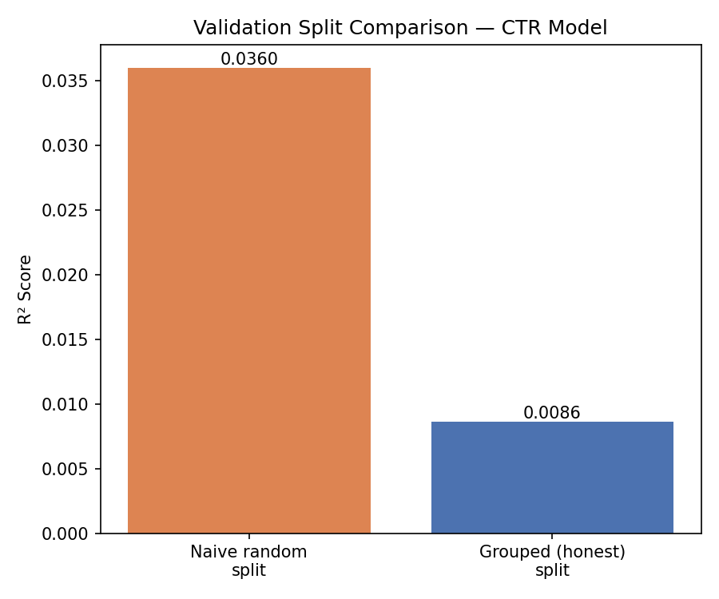
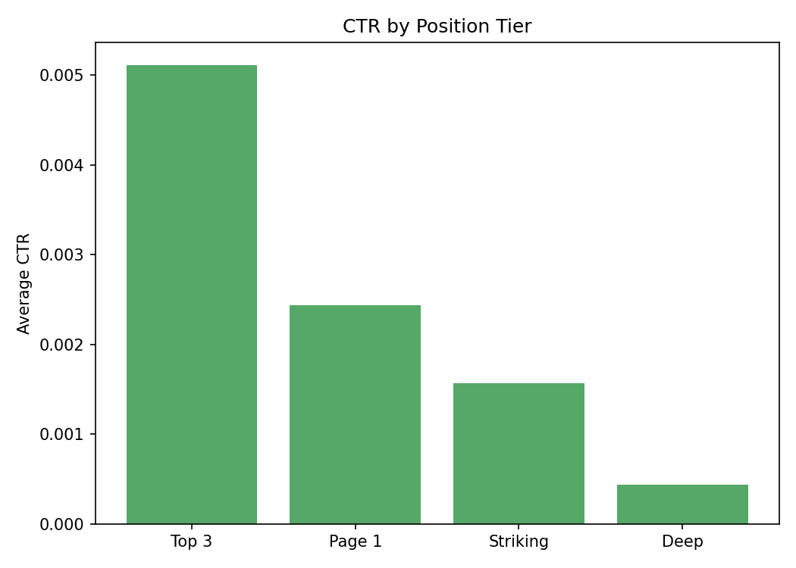
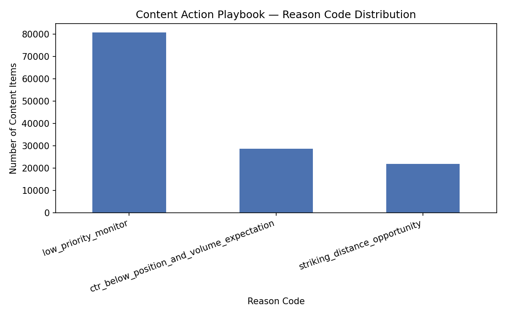

A study of which observable content and search signals associate with click-through rate across the FlyRank ML Internship warehouse, and what happens to a model's apparent skill once client-level leakage is removed.
Question: which observable content and search signals associate with click-through rate (CTR), and does a learned model meaningfully beat a hand-written rule once evaluated honestly? Method: a gradient boosting regressor was trained on six observed signals — average position, content impression volume, and query-shape features — and compared against a mean-CTR baseline and a hand-written scoring rule, using a client-grouped validation split to prevent leakage across the same client. Result: under an honest, client-grouped split the model shows a small but real improvement over baseline (R² = 0.0086 vs. −0.0209), considerably smaller than the R² = 0.0360 a naive random split would report — a roughly 4.7× gap that demonstrates how much a careless validation design can overstate real predictive power. Average position remains the dominant signal by a wide margin, consistent across every stage of this study.
A content team can review only so many pages a week. The decision this work supports is simple: which pages should land at the top of that review queue, and why — using evidence rather than intuition.
Two competing instincts guide most content prioritization: chase pages with high keyword search volume, or trust a page's current search position as the signal that matters. This study tests both instincts directly against 90 days of real, hashed, anonymized search performance data, and asks a further question most internal tools skip: does a learned model's apparent edge over a simple rule survive contact with an honest validation design, or is it partly an artifact of how the evaluation was set up?
This study uses the fact_content_query_90d table from the FlyRank/internship-warehouse release on Hugging Face — a 90-day rolling window of query-level search performance, hashed and anonymized at the client and content level.
Exclusions: rows with zero observed impressions (no real performance signal), and rows with an average position below 1 (a data artifact that inflates position-based scores if left in). No client names, domains, or private queries appear anywhere in this study or its underlying code — every identifier is a one-way hash.
Task type: scoring (regression). CTR is continuous, not categorical, so this is framed as a regression problem rather than classification.
Label: ctr, computed as clicks_90d / impressions_90d — not a raw warehouse column, deliberately derived at query time so it can never silently double as an input feature.
Features: average position, content-level 90-day impression volume, and four query-shape signals (character count, token count, rare-impression share, anonymized-impression share) — each observed independently of the label, with no forward-looking or label-derived inputs.
Baseline: a hand-written rule scoring pages by inverse position and log-scaled volume, aggregated to one row per content item to prevent a single high-volume page from dominating the ranked queue, with position floored at 1 to prevent score blow-up on invalid values.
Validation design: split by client_hash_id, so no client's content appears in both the training and test sets — this is compared directly against a naive random split to quantify how much that choice matters.
Leakage audit: every feature's correlation with the label was checked directly. All six sit between −0.12 and +0.05 — far from the near-1.0 correlation a genuinely leaked feature would show.
Model vs. baseline, evaluated on the same client-grouped split.
| Model | R² | MAE |
|---|---|---|
| Baseline (mean CTR) | −0.0209 | 0.005369 |
| Gradient Boosting | 0.0086 | 0.005432 |
R² favors the model — it explains real variance the baseline can't. MAE is marginally worse for the model, meaning it reduces systematic error better than it reduces typical per-row error. Both numbers are reported rather than the more flattering one alone.



This is an observational study. An R² of 0.0086, while real and reproducible, is small in absolute terms — most CTR variance remains unexplained by these six features. The model should be read as capturing a directional pattern the baseline misses, not as a reliably better prediction on any single row.
Position dominates whatever signal exists here. This echoes a caution raised directly in FlyRank's own research: composite or model-based scores that already include position as an input risk simply rediscovering that input rather than finding genuinely new structure.
Nothing here establishes causation. A page's refresh, position, or volume being associated with different CTR outcomes is not evidence that changing one of them causes the other to move. Every claim in this report should be read as observed, directional, and decision-support — never as guaranteed or causal.
Intended use: a content team lead prioritizing a limited weekly review queue — not an automated publishing or ranking-change tool.
Monitoring & retrain triggers: revisit this queue if average position shifts more than roughly 5 places portfolio-wide month over month, if the honest grouped-split R² drops meaningfully on a new holdout month, or on a fixed quarterly cadence regardless of any visible signal break.
Every result in this report traces back to an executed, committed notebook in the project repository.